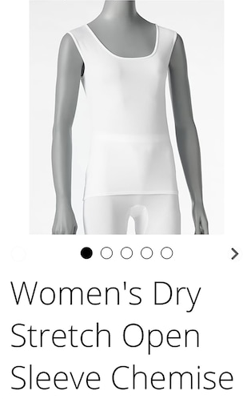

🩲 Garments¶
Estimated time to read: 23 minutes
Adult members of The Church of Jesus Christ of Latter-day Saints who receive the endowment enter into sacred promises, known as covenants, to follow the highest standards of moral integrity and dedication to God. As part of entering into these covenants in the temple, members receive a simple undergarment—often referred to as the “temple garment” or “garment of the Holy Priesthood.” Unlike other ceremonial clothing used during the endowment, the garment is worn underneath members’ normal clothing for the rest of their lives, serving as a daily physical reminder of their covenant relationship with God.
...
In our day the garment encourages modesty, but its significance is much deeper. For Church members who have received the endowment, the garment reminds them of their connection to God, their commitment to follow His will, and the blessings and protection God has promised the faithful. The First Presidency of the Church has stated that how the garment is worn “is an outward expression of an inward commitment to follow the Savior.”
— Garments, Topics and Questions
The advice from the First Presidency is cited to a "First Presidency letter, Oct 10, 1988." I cannot find this letter documented anywhere, but it sure does get referenced frequently.
Maybe I'm just a whiny little bitch, but I had always felt like garments were hot and uncomfortable. I am not a woman so I haven't had to deal with adverse effects on female anatomy. One refrain I've heard from women is the garments' inclination toward infections & poor breathability. That is not my experience, so I can't make meaningful commentary on it outside of observing that this doesn't appear to be a divine design. Didn't God create our bodies, and also design these garments? Wouldn't He know how to make clothing that is not actively causing harm? Are modern church leaders consulting God in this design process? Is it safe to conclude that these are the products of men with fifty-year-long careers in law?
I do know that poor diet choices that result in some juicy flatulence means that laundering the garments was a real pain. The fabric is dyed white, meaning that bleach only makes stains worse. Truth be told, dealing with laundry was a better incentive for me to eat right than the Word of Wisdom ever had been.
Each person should understand the importance of wearing the temple garment.
Explain that those who have participated in the temple ceremony are privileged to wear the garment of the holy priesthood. In a statement to the Church, the First Presidency said [... it] is an outward expression of an inward commitment to follow the Savior.
— Lesson 6: Preparing to Enter the Holy Temple, Temple Preparation class manual
"This is important. You should understand how important it is. It's a privilege." Yeah okay so what does it mean, though?
Symbolism¶
The temple garment symbolizes continuing commitment
The wearing of the temple garment bears great symbolic significance and represents a continuing commitment. Just as the Savior gave us an example of His ability to endure to the end, wearing the garment is one way we demonstrate enduring faith in Him and in His eternal covenants with us.
The First Presidency prepared a letter to the Church on this subject. They wrote:
"... How it is worn is an outward expression of an inward commitment to follow the Savior."
— Prepare for the Blessings of the Temple, Elder Russell M. Nelson, Quorum of the Twelve Apostles, Ensign October 2010
The First Presidency has stated, “It is a sacred privilege to wear the garment and doing so is an outward expression of an inner commitment to follow the Savior Jesus Christ.” Every time we participate in a priesthood ordinance, serve others, engage in prayer, or study the gospel, for example, we are showing an “outward expression” of our own individual commitment to follow the Savior. While the temple garment is not visible to the world, wearing it faithfully can provide a constant reminder to the wearer of sacred temple covenants made with God—a symbol of our desire to become what God knows we can be.
— The Temple Garment: A Sacred Reminder of the Lord Jesus Christ, Temple Department staff
This First Presidency quote is more recent, and I can find a primary source for it. Isn't it funny how LDS religious practices that go against our better judgment are called "a privilege" by leadership?
Another excerpt from the same page quoted above:
President Russell M. Nelson has declared that “wearing the temple garment has deep symbolic significance. It represents a continuing commitment.” This includes God’s commitment to provide a Savior for His children , as well as our own commitment to accept Jesus Christ as our Savior and Redeemer.
...
For Adam and Eve, the garment served as a symbol of their relationship with God and provided a reminder of the covenants that allowed them to receive the many blessings God has for His faithful children. As we navigate the challenges and trials of mortality, the garment can help us remember Jesus Christ, cherish our temple covenants, and remain firm in our commitment to qualify for the blessings of eternal life.
I have yet to find what blessings to expect from wearing garments. Is this one of those post-mortem promises, where you'll find out what you get only after you've died?
The garment of the holy priesthood is deeply symbolic and also points to the Savior. ... Our temple garment reminds us that the Savior and the blessings of His Atonement cover us throughout our lives. As we put on the garment of the holy priesthood each day, that beautiful symbol becomes a part of us.
...
As I keep my covenants and obligations with God, including wearing the garment of the holy priesthood, my very life can become a personal symbol of my love and deep gratitude for my Savior, Jesus Christ, and my desire to have Him with me always.
— Put Ye On the Lord Jesus Christ, Sister J. Anette Dennis, First Counselor in the Relief Society General Presidency, General Conference 2024 April
I will applaud Sister Dennis here for not citing that 1988 letter's "outward expression" explanation. Her remarks (by my estimation) don't quite satisfy the questions of what their purpose is or why we do them. It's symbolic, and they're related to Jesus in some way.
Ok but what does it mean though¶
Surely I'm not alone in failing to see the significance? I wore mine daily for six years or so, and through vain repetition of donning the Jesus-jammies every morning, they just became cumbersome underpants. Looking on the church's official website has only led me to these numerous quotes from church authorities assuring is that it's symbolic and special. They point to Jesus somehow.
Telling me that it's "an outward expression of an inward commitment" doesn't tell me anything. What does that even mean? Why add the word fluff? It could also read "an expression of commitment," and be just as meaningful. Drawing that contrast between outward & inward... just sounds like we're trying to add profundity where there is no substance. What does it mean? The First Presidency said it, so I guess that means it's profound and meaningful by that virtue alone. Repeating that statement in every article I stumbled upon doesn't clarify what it means, though! The church has a Frequently Asked Questions About the Temple Garment with an entry on exactly this: "What does 'an outward expression of an inward commitment' mean?" Their answer is not one that I would call satisfying. Go check for yourself and let me know if it sheds any light on the matter for you.
Is this one of those topics that is too sacred to share? Really, now. There are symbols embroidered into modern garments. Can't we get an explanation for those?
Outside source¶
The marks in the garments are sacred symbols. The V-shaped symbol on the left breast was referred to as "The Compasses", while the reverse-L-shaped symbol on the right breast was referred to by early church leaders as "The Square".
According to a description by church president John Taylor in 1883, the "Square" represents "the justice and fairness of our Heavenly Father, that we will receive all the good that is coming to us or all that we earn, on a square deal", and the "Compasses" represents "the North Star". ... [T]he collar represented the idea that the Lord's "yoke is easy and burden is light", or the "Crown of the Priesthood"; the double-knotted strings represented "the Trinity" and "the marriage covenant"; the navel mark represents "strength in the navel and marrow in the bones"; and the knee mark represents "that every knee shall bow and every tongue confess that Jesus is the Christ".
In 1926, LDS Church apostle David O. McKay offered an updated description that was later incorporated into the church's endowment ceremony. According to McKay's explanation, the "mark of the Compass" represents "an undeviating course leading to eternal life; a constant reminder that desires, appetites, and passions are to be kept within the bounds the Lord has set; and that all truth may be circumscribed into one great whole"; the "mark of the Square" represents "exactness and honor" in keeping the commandments and covenants of God; the navel mark represents "the need of constant nourishment to body and spirit"; and the "knee mark" represents "that every knee shall bow and every tongue shall confess that Jesus is the Christ".
— Temple Garment, Wikipedia
... Was that so hard? In three paragraphs, Wikipedia just ran circles around the dozen or so LDS materials I had read that skirted the issue, insisting that it has "deep symbolic significance" and contrasting outward and inward. Those descriptions from McKay are the ones that I remember hearing as a practicing Mormon. I will also concede that those explanations I had heard were vague recollections at best, when every day I put them on. I was much more worried about how often they shrank in the laundry, resulting in a poor fit. I was also anxious about the possibility of them becoming visible to a passerby, and how would I explain wearing two layers of clothes in the summer months while living in Florida.
Also, hold the phone, now— a collar? Double-knotted strings? I have some follow-up questions here. Those things with divinely appointed symbolism were removed some time between 1883 and 1926, likely because of the industrial revolution making textile manufacturing more streamlined. Making the two-piece garment into a t-shirt and shorts style is presumably more accessible, easier to make, easier to don, and presumably cheaper. Who knew that God's eternal covenants would be so heavily influenced by capitalism? Moreover, in the linked Wikipedia article is an image of the classic garment: a one-piece, long-sleeved, full-length article of clothing, featuring a collar and strings to tie together. Go check it out if you'd like to.
For President John Taylor to share this insight in 1883 makes me wonder if the symbolism had explanations during Smith or Young's respective presidencies. I know that there exists lots of reading material about the intersection of Free Masonry and Mormon temples, including those symbols. Did folks during Smith's presidency have an outlined symbolism explanation?
Embroidery¶
I've read the symbolism of being covered by the garment is symbolic of being covered by the atonement, and in the above section we read an explanation for the literal symbols on the garments themselves. In early days of the church, the symbols (sometimes called 'signs') were cut into the fabric (1, 2) before later iterations embroidered or screen-printed on. I really do find it bizarre that the symbols are positioned right at the wearer's areola. Whether cut out of the fabric or embroidered on, both are weird. When cut out, was this a way to garment-check your peers in winter time?
Is it those signs that make the garment special? Presumably garments are "blessed" in some way, or else the church could provide some kind of kit or guideline for how to put those markings on your own clothing. Imagine how much simpler things would be if you could just use a marker of some kind, sketch an L and a V on the inner fabric of your bra, and call it a day. Or, if you'd prefer to not modify your clothing, what if you were to place those markings directly on your body? It could be something washable like mascara. Tattooing anything on ones areola sounds unpleasant. Could we make our own garments? The church general handbook says "no. You have to buy them from us."
Or, since garments aren't meant to be visible to an observer, do the signs need to be physically perceptible to anyone? I'm aware of a Catholic tradition of "the Sign of the Cross," being made up of a short ritualistic gesture and a verbal recitation "in the name of the Father, and of the Son, and of the Holy Spirit. Amen." (1, 2, 3, 4, 5) Quick and easy. Imagine if LDS temple garments were replaced by something similar: gesture over the location of your body where the symbol would physically be, reciting the description from Elder McKay. Would that be more meaningful than knee-length underdrawers?
I suppose that the LDS church likes to avoid "rote prayer" to avoid vain repetition— something loses its meaning if it's mundane and routine. In my own experience, temple garments become just regular ol' underpants after a few weeks. Maybe once a month I would examine the symbols and consider that they have any significance at all. The rest of the time, my thoughts were "these are uncomfortable, they are cumbersome, and I don't like them." They're unflattering. No, I am not suggesting they should be provocative and alluring; I'm suggesting that a single solution for large demographics is arrogant and misguided.
Worthiness¶
A few years ago, in a seminar for new temple presidents and matrons, Elder James E. Faust, then of the Quorum of the Twelve Apostles, told about his being called to serve as a General Authority. He was asked only one question by President Harold B. Lee: “Do you wear the garments properly?” to which he answered in the affirmative. He then asked if President Lee wasn’t going to ask him about his worthiness. President Lee replied that he didn’t need to, for he had learned from experience that how one wears the garment is the expression of how the individual feels about the Church and everything that relates to it. It is a measure of one’s worthiness and devotion to the gospel.
— The Temple Garment: “An Outward Expression of an Inward Commitment”, Eternal Marriage Student Manual, Elder Carlos E. Asay, Emeritus Member of the First Quorum of the Seventy; also in Ensign, 1997 August
Name-dropping anecdotes for a rhetorical ethos isn't what I would call doctrine, personally. This quote does make it sound like we could do away with temple recommend interviews and just ask about your garments. Works for calling apostles, why not for us attending the temple?
Let's not overlook that this does set a precedent for garment-checking our peers. Says right here that it's a measure of worthiness and devotion, so... if you see someone who should have garments on but doesn't, something is up. You saw Becky out with some guy named Brad last week, and now she doesn't have her garments on? Now we know why! She isn't outwardly expressing inner commitment!
General Handbook¶
Wearing the Garment
Members should not modify or alter the garment to accommodate different styles of clothing.
Members should not inappropriately display the garment to those who do not understand its significance.
— § 38.5.5
Wouldn't you know it, this section also shares the following insight: "When you put on your garment, you put on a sacred symbol of Jesus Christ. Wearing it is an outward expression of your inner commitment to follow Him." Fantastic, thanks for that guidance.
Caring for the Garment
The garment is a sacred symbol of Jesus Christ. The way we care for our garments should reflect that sacred symbolism.
— § 38.5.6
Disposing of Garments and Ceremonial Temple Clothing
To dispose of worn-out temple garments, members should cut out and destroy the marks. Members then cut up the remaining fabric so it cannot be identified as a garment. The remaining cloth can be discarded.
— § 38.5.9
I would like to find some scriptural basis for all of this. Of the canon justifications I've found, there's Exodus 28:2-4, reading "Aaron should have holy garments; here's what they should look like," and Exodus 39:41, reading "priests should have 'cloths of service.'" Go on and read those passages and tell me how did we get from a specific blood lineage having ceremonial clothes to "outward expression of inner commitment" yeast infection underpants.
If you want to be extra spicy, you could search the Old Testament for the word "garment" and see if you can find the connection. Invoking Occam’s Razor, choosing the simpler of two explanations, leads me to conclude that this is plagiarized Free Mason symbolism.
Modesty¶
“The principles of modesty and keeping the body appropriately covered are implicit in the covenant and should govern the nature of all clothing worn. Endowed members of the Church wear the garment as a reminder of the sacred covenants they have made with the Lord and also as a protection against temptation and evil. How it is worn is an outward expression of an inward commitment to follow the Savior.”
— First Presidency Letter, 10 Oct. 1988; Copied from the Institute Eternal Marriage Student Manual mentioned above
Sure wish I could find that letter to link to, so that this "outward expression" refrain would actually convey some kind of meaning. I'm not sure that modesty is a relevant factor. Keeping your body appropriately covered by a subjective measure is hardly a new idea in Mormonism.
And young women, please understand that if you dress immodestly, you are magnifying this problem by becoming pornography to some of the men who see you.
— Pornography, Elder Dallin H. Oaks, Quorum of the Twelve Apostles, General Conference 2005 April

"I, in a position of authority, have difficulty not sexualizing 'young women,' and it is their fault. They're becoming porn. This is an outward expression of my inward repression, and definitely not at all related to my 1946 high school experience."
Alright, tell me if this is too much of a stretch: this apostolic advice is directed toward "young women," the term used to describe girls between 12 - 17 in the church's youth program—or at least this was the case when I attended. Once women are preparing to go to the temple to either A) get married, or B) serve a mission, they are no longer in that youth program so this apostolic guidance doesn't apply. Is that fair? How else would you justify women's garment tops having the shoulders covered for the sake of "modesty," but still feature a plunging neckline? Am I projecting too much here, by implying that bared shoulders are less enticing than visible cleavage?
Shoulders¶
Your Dress Is a Reflection of Who You Are
“Immodest clothing includes short shorts and skirts, tight clothing, shirts that do not cover the stomach, and other revealing attire. Young women should wear clothing that covers the shoulder and avoid clothing that is low-cut in the front or the back or revealing in any other manner. Young men should also maintain modesty in their appearance. ..."
— Modesty Matters, Ensign June 2006; quoting from For the Strength of Youth pamphlet, 2001
It always bugged me when girls had these explicit parameters specified, and boys had "uh, you be modest too, I guess."
Also, "young women should ... avoid clothing that is low-cut in the front[,]" like, I don't know, temple garments? I guess modesty is malleable, if we don't clarify how low of a cut is low-cut? To be fair, I'm not sure how I'd quantify that, given how humans come in a wide range of shapes, sizes, and proportions. If we'll insist that we don't call garments underwear, then they shouldn't have the same loose coverage of underwear?
My sister served as a Young Women president in Alaska for several years. I have loved and followed her advice for modesty for girls and women. She used the “Head Shoulders, Knees, and Toes” method. We all know the song, but it works very well for modesty as well.
Head: Put your hands on your head. If any skin shows around your middle, your clothing is not appropriate.
Shoulders: Put your hands on your shoulders. If you can feel bare skin, the clothing is not modest.
Knees: Put your hands on your knees. You should not expose anything at the neckline of your shirt.
Toes: Put your hands on your toes. You should not be exposing any skin on your backside.
I have found this to be a good exercise for checking my modesty and hope that it can be helpful to others as well.
— Questions & Answers, Ensign June 2011
What? No, we're not a cult.
In everyday living, immodest clothing such as short shorts, miniskirts, tight clothing, shirts that do not cover the stomach, and other revealing attire are not appropriate. Men and women—including young men and young women—should wear clothing that covers the shoulder and avoid clothing that is low cut in the front or back or revealing in any other manner. Tight pants, tight shirts, excessively baggy clothing, wrinkled apparel, and unkempt hair are not appropriate.
— Modesty: Reverence for the Lord, Elder Robert D. Hales, Quorum of the Twelve Apostles, Ensign August 2008
"Those aren't poodle skirts from 1951! Blasphemy! Since I represent God, and I don't like it, that means God doesn't like it either. Get off my lawn."
Altering for the Better
Amid the bustle of fittings and alterations, the young women learned some practical ways to make dresses modest.
“I had a cute black dress, and we added a bolero jacket that covered my back and shoulders,” said Laurel Leslie Abalos. “The jacket made the dress a beautiful, modest option. We didn’t even have to alter the gown.”
For Elise, the alterations were a little more extensive, but the result was just as rewarding. With the help and expertise of her grandmother, Elise constructed sleeves for her dress. “When you’re modest,” she said, “you can focus on what matters: how you act. I want to enter the temple one day, so I need to prepare now for that day. One of the ways I do that is by dressing modestly.”
— Modest by Design, Julia Woodbury, New Era June 2010
I am not female, so these are experiences that I cannot empathize with... but really, was this "rewarding?" There could be some social value in bonding with Grandma over a craft. I have little experience with sewing to create my own Halloween costumes, and must admit that it was kind of fun. How intrinsically satisfying was it to put a bolero jacket over your cute black dress? If your entire worth as a human is contingent upon temple-worthiness, then I guess it's very fulfilling...?
My mom sewed for me, helped me choose modest clothing, and told me of her decision years before. When I was in high school looking for a formal gown to wear to the prom, she took me shopping. We searched and searched for something appropriate, and finding nothing in our area, we drove three hours to Salt Lake City. There we found a beautiful and perfectly modest pink gown. Her sacrifice of time showed me that dressing modestly was important to her. And it was at that dance I realized how important it had become to me as well. I felt like a princess in my dress. I noticed how uncomfortable some of the other girls seemed to be in their dresses. Many of them spent the evening keeping tiny straps on their shoulders or tugging at the bodices of strapless gowns. They did not look like they were having much fun.
— Mom’s Commitment to Modesty, Kelly Ann Peterson, Ensign June 2011
Yeah, or they could also just be awkward, self-conscious teenagers. There are a variety of factors that could contribute to enjoying a prom experience. Again acknowledging that I am not female, I would imagine that having a bad date to accompany you could be a big factor. Maybe these peers don't normally wear bodices every day, so it's unfamiliar, making them conscientious of the fit?
No, they just had exposed porn shoulders.
I also found a few checklists (1, 2) to go through, both featured in the Friend magazine, targeted towards children under 10 years old. Gotta get 'em early, because if literal children didn't have those checklists, they might not develop an unhealthy sense of scrupulosity.
Also observe the release month for each of those quotes: June, June, August, June, & June. This doesn't justify breaking out your tinfoil hat, but is modesty only relevant in summer months? Why would people need to be reminded of modesty at this time of year? It's hot outside? You'd like to wear less cumbersome clothes in hot weather? Well, it's hotter down in hell, so get your heathen shoulders covered with a homely bolero jacket. Find long-sleeved swimwear. That'll help you fit right in with your peers. You won't be the subject of any judgment or scrutiny for dressing like you're scared of bare skin, nope
Sleeveless Top¶
So... I guess we can demonstrate that the church has a very strange fascination with covering shoulders, which is why temple garments always have them covered.
... What's that? They made a sleeveless garment top design?

If I was a woman, having grown up in the LDS church's youth program, I imagine that I would be livid by this development. The Salt Lake Tribune describes this new variety targeted toward LDS members "in hot climates such as Uganda, Kenya, South Africa, the Philippines and some southern U.S. locations."
If you were worried about equality, yes, there is an "open sleeve" style for men as well. Rules of modesty seem to only apply if you're not in what Salt Lake considers a "hot climate".